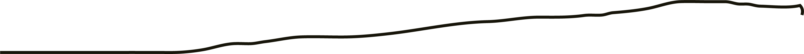
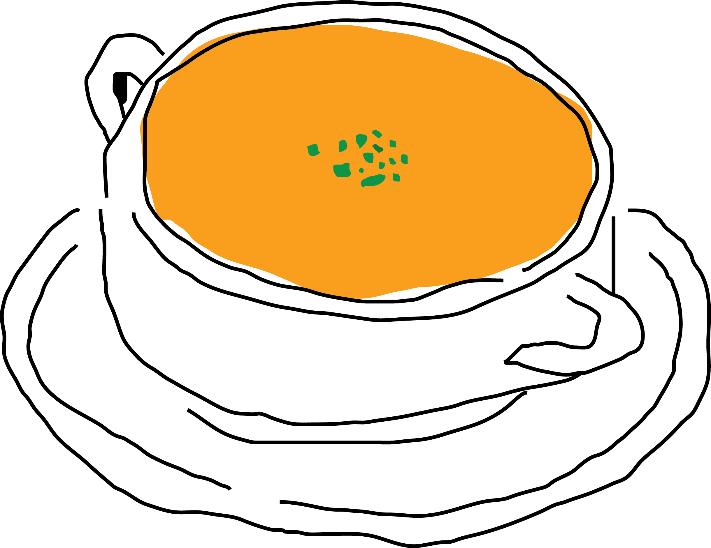
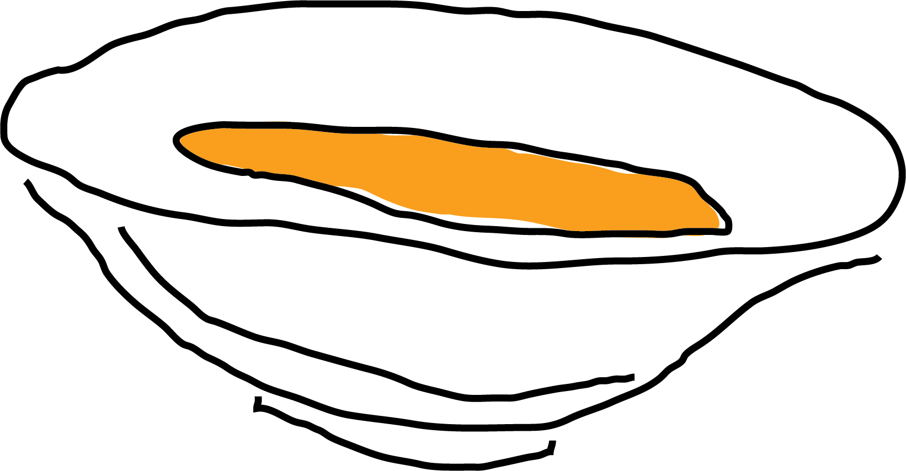
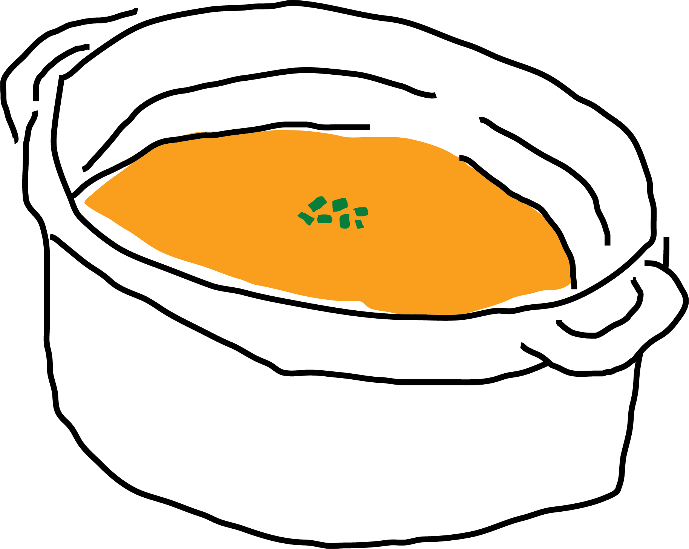
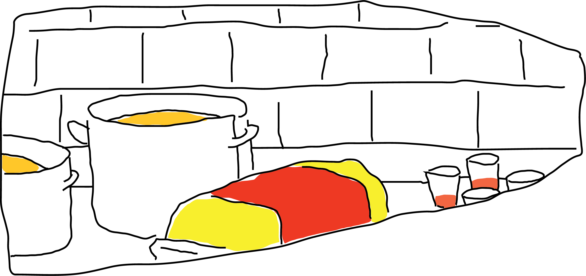
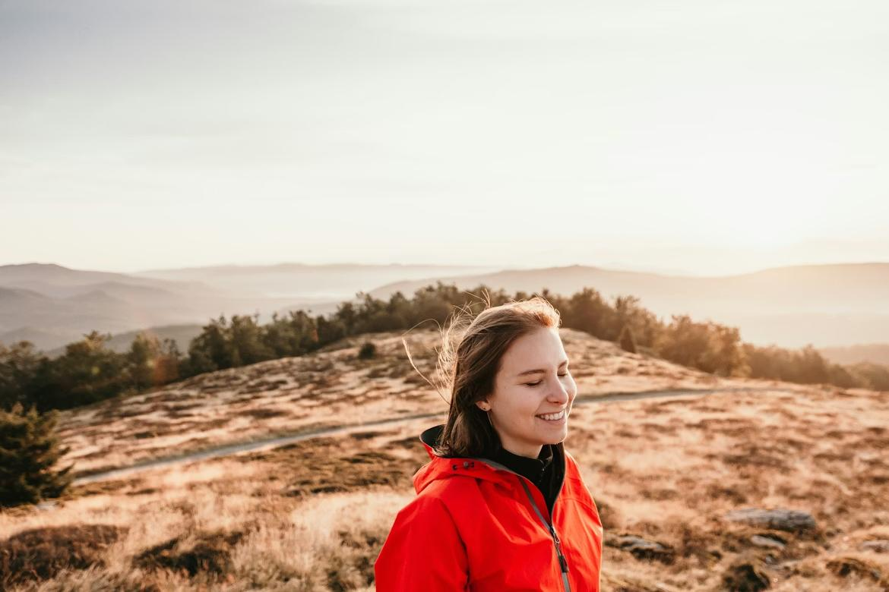
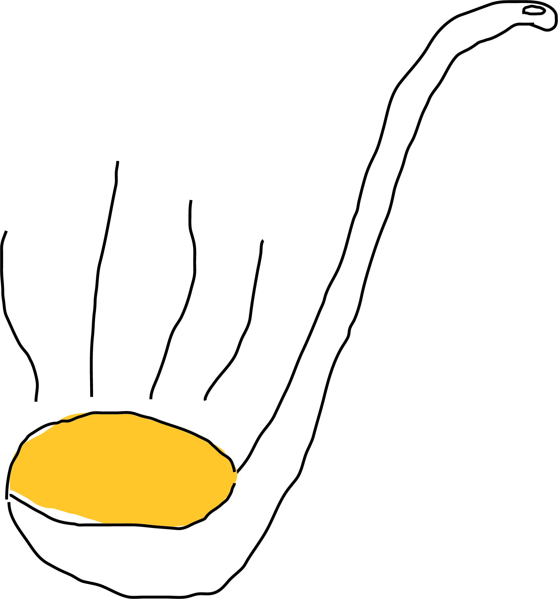
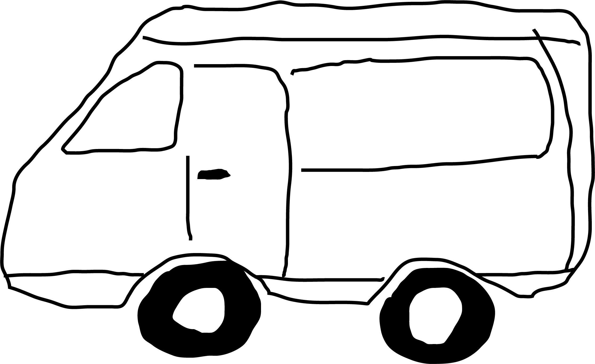
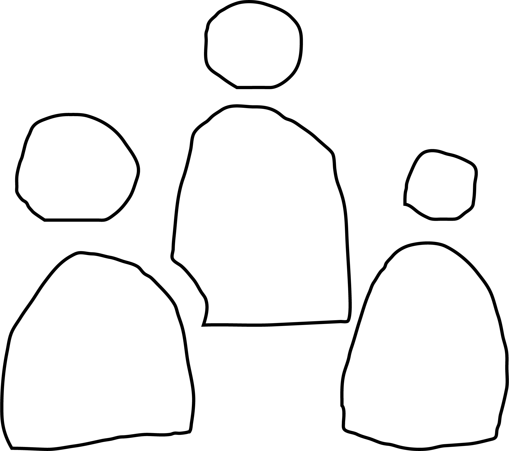
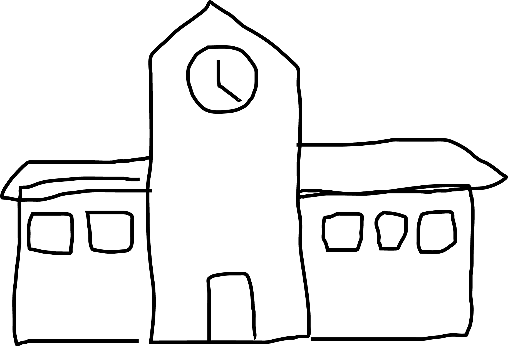

GROUP 14
BACKBONE - DCU FINAL PROJECT FILM
SHORT FILM + WEBSITE





Founded in 1998, Homeless Support began as a small grassroots effort by three local residents who wanted to address the rising number of individuals sleeping rough in their community. What started as a weekly food handout program eventually grew into a full charity organisation offering shelter assistance, meal services, outreach support, and long-term recovery pathways.
By 2005, the charity had expanded into a dedicated support center, offering warm meals, clothing donations, and access to essential services. In 2015, Homeless Support launched its first volunteer-led outreach team, helping bring resources directly to individuals in need. Today, the organisation is powered by volunteers, community donations, and partnerships with local councils and businesses.
Our mission has always remained the same: to provide dignity, compassion, and practical help to those experiencing homelessness.
GROUP 14
BACKBONE - DCU FINAL PROJECT FILM
ABOUT US

Ava has been volunteering with us for the past 3 years
Ava’s story is one of resilience. Due to the loss of a loved one, she became determined to support others facing similar struggles. Through our community programs, she found a sense of purpose and now uses her experience to offer compassion, understanding, and hope to those in need.



